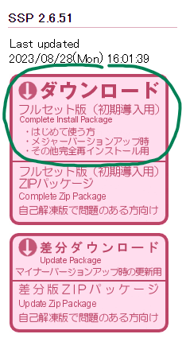

Les Ukagaka, aussi connus sous le nom de "ghost" sont des petits personnages de bureau d'ordinateur, originaire du Japon. plus d'informations (en anglais)
installer SSP : rendez vous sur ce site, ca peu etre intimidant car la page est en japonais, mais il suffit de cliquer sur ce gros boutton !
SSP s'ouvre avec un Ghost pré-installé, Emily. Clique droit sur Emily --> Language --> English pour mettre SSP en anglais
drag n drop le .nar sur Emily, cliquer sur OK, Prune devrait s'installer !
clique droit sur Emily --> change Ghost --> Prune et Pomelo
Tada ! Prune est maintenant dans le coin de votre écran !
c'est la première fois que je code quelque chose, pour l'instant elle ne fonctionne pas parfaitement et elle est très limitée en therme de personalité, mais j'espère qu'elle vous plaira ! si c'est le cas je continuerais de l'améliorer.